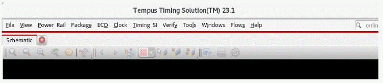
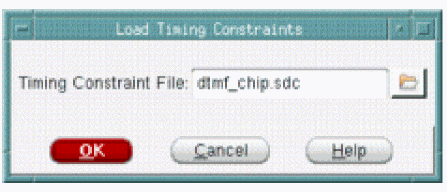

Accessing Documentation and Help from Tempus GUI
The Tempus software provides the following two methods to access documentation and help from the GUI:
Select Help on the Main Tempus Menu

Select Help, and click any of the following options:
- Text Command Reference Opens the Table of Contents page of the text command reference.
- User Guide Opens the Table of Contents page of the user guide.
- Known Problems and Solutions Opens the Table of Contents page of the known problems and solutions document.
Select Help from a Tempus Form
 Click the Help button in the bottom right corner of a form.
Click the Help button in the bottom right corner of a form.

Clicking the Help button opens the entry for the form in Doc Assistant.
Return to top